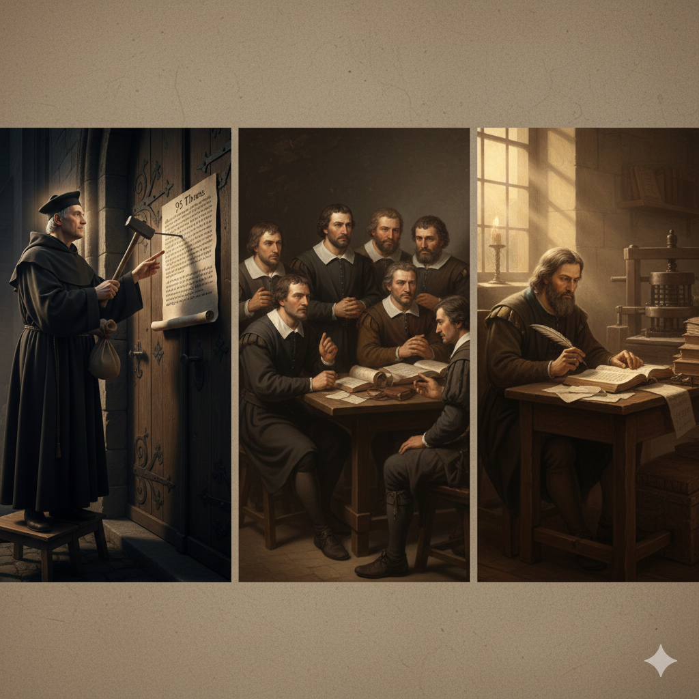

分題 06 / 08
實踐意義
實踐意義
重視聖經
學習宗教改革的精神，以聖經為信仰和生活的最高權威，持續研讀和遵行神的話語。
傳揚福音
效法歷代聖徒的見證，積極傳揚純正的福音，讓更多人認識救恩。
持守真理
在各種挑戰和試探中，堅定持守聖經真理，不隨從世界的潮流。
教會合一
在核心真理上合一，彼此相愛，共同見證神的榮耀，避免不必要的分裂。
持續學習
從教會歷史中學習，認識真理的發展，在屬靈知識上不斷成長。
愛與見證
效法歷代聖徒的愛心和見證，在當代社會中活出基督的樣式。